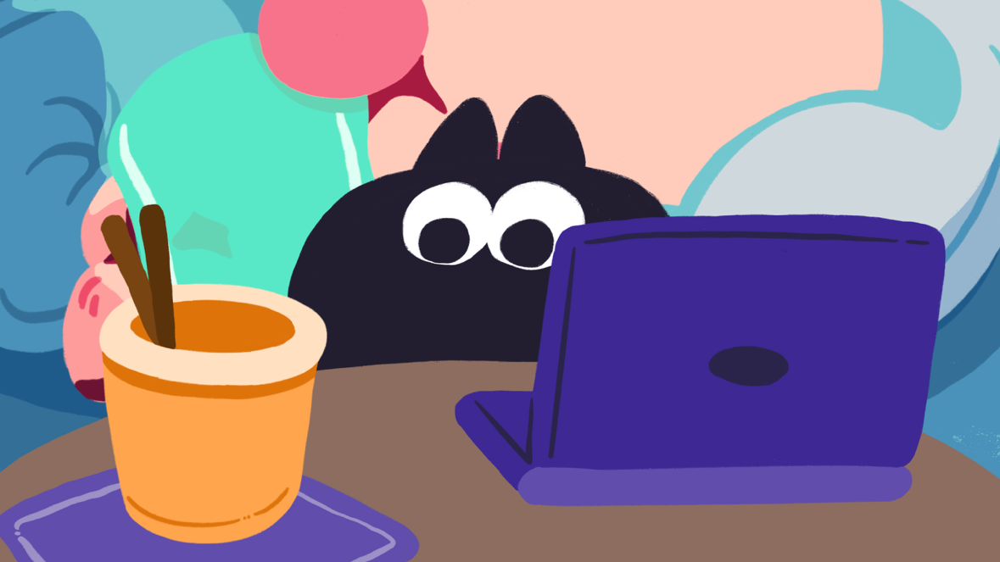

ABOUT ME / 關於卡比
自我介紹 & 創作性格
#多媒體動畫系 4.0
#珍奶驅動

沉浸渲染中猩之卡比 Kirby
2D / 3D 動畫創作者 & 插畫師
肝帝模式
急診創作者
卡比座右銘
「忍一時越想越氣，退一步直接斷氣？」
秉持著「能用動畫解決的事，絕不用嘴巴講」的原則，在繪圖板與螢幕前展開一場又一場的視覺冒險。
哈囉！我是猩之卡比，目前就讀於多媒體動畫系。專注於 2D 手繪動畫、逐格定格動畫 (Stop Motion)、分鏡腳本創作與動態視覺設計 (Motion Graphics)。
對畫面中的節奏感、線條張力與微小的幀數變化極為著迷。創作時只要桌上有一杯微糖微冰的珍珠奶茶，以及播放著令人情緒沸騰的黑膠音樂，就能保持 100% 的渲染引擎全速運轉。
PERSONALITY TRAITS
三大核心創作性格
SKILLS & SOFTWARE
技能裝備與創作工具
卡比在各軟體工具中打滾累積的作戰能力
AE
After Effects
動態合成與特效
熟練掌握
PR
Premiere Pro
影片剪輯調色
剪接節奏
3D
Blender / Maya
3D 建模動畫
模型與材質
PS
Photoshop
電繪與美術設計
場景插畫
AI
Illustrator
向量視覺設計
圖形角色
CSP
Clip Studio
2D 分鏡原畫
手繪動畫